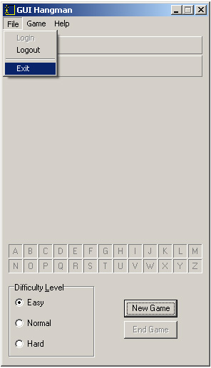

Exiting the Game
If you can't figure out how to exit the entire game, then you probably shouldn't be playing GUI Hangman in the first place. However, if you somehow did forget, then the game can be closed by selecting File | Exit from the main menu or clicking on the X in the top right hand corner of the main window.
